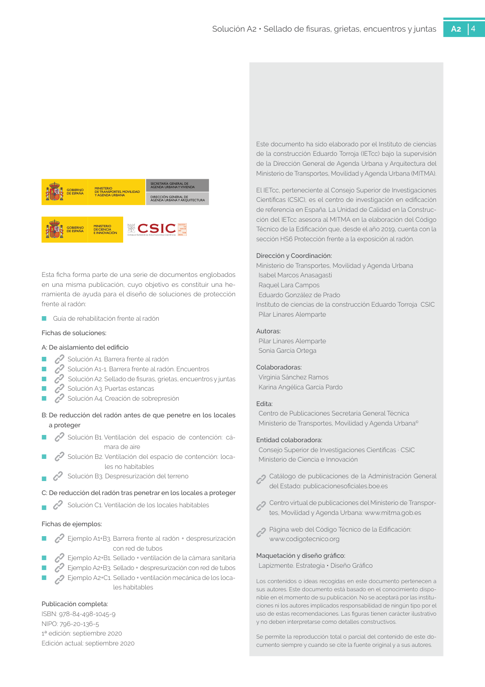

GUIA · 6. COSTE · versión sin-fecha · capa guia
Formatos: JSON compacto · Markdown · PDF fuente
Ámbito del documento · texto del ámbito · documento y tablas
Tipo: tablas, figuras · nivel 1 · sección estimada: 6. COSTE · padre:
6. COSTE El coste se considera bajo en relación al resto de so luciones de protección, puesto que se trata de una solución basada en la reparación puntual de un ele mento existente. 4 Solución A2 • Sellado de fisuras, grietas, encuentros y juntas A2 4 Este documento ha sido elaborado por el Instituto de ciencias de la construcción Eduardo Torroja (IETcc) bajo la supervisión de la Dirección General de Agenda Urbana y Arquitectura del Ministerio de Transportes, Movilidad y Agenda Urbana (MITMA). El IETcc, perteneciente al Consejo Superior de Investigaciones Científicas (CSIC), es el centro de investigación en edificación de referencia en España. La Unidad de Calidad en la Construc ción del IETcc asesora al MITMA en la elaboración del Código Técnico de la Edificación que, desde el año 2019, cuenta con la

PDF fuente redistribuible: copia fiel enlazada en esta página (SHA256 verificado).